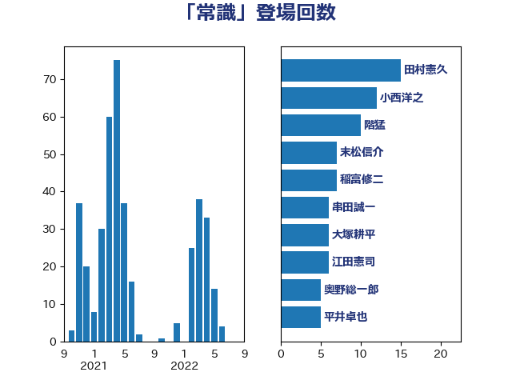

単語「常識」

| 田村憲久 | 自由民主党 | 15 回 |
| 小西洋之 | 立憲民主党 | 12 回 |
| 階猛 | 立憲民主党 | 10 回 |
| 末松信介 | 自由民主党 | 7 回 |
| 稲富修二 | 立憲民主党 | 7 回 |
| 串田誠一 | 日本維新の会 | 6 回 |
| 大塚耕平 | 国民民主党 | 6 回 |
| 江田憲司 | 立憲民主党 | 6 回 |
| 奥野総一郎 | 立憲民主党 | 5 回 |
| 平井卓也 | 自由民主党 | 5 回 |
| 穀田恵二 | 日本共産党 | 5 回 |
| 茂木敏充 | 自由民主党 | 5 回 |
| 赤嶺政賢 | 日本共産党 | 5 回 |
| 長妻昭 | 立憲民主党 | 5 回 |
| 青山繁晴 | 自由民主党 | 5 回 |
| 松原仁 | 立憲民主党 | 4 回 |
| 菅義偉 | 自由民主党 | 4 回 |
| 西田昌司 | 自由民主党 | 4 回 |
| 足立康史 | 日本維新の会 | 4 回 |
| 遠藤敬 | 日本維新の会 | 4 回 |
| 麻生太郎 | 自由民主党 | 4 回 |
| 一谷勇一郎 | 日本維新の会 | 3 回 |
| 伊波洋一 | 無所属 | 3 回 |
| 室井邦彦 | 日本維新の会 | 3 回 |
| 宮本徹 | 日本共産党 | 3 回 |
| 小泉進次郎 | 自由民主党 | 3 回 |
| 末松義規 | 立憲民主党 | 3 回 |
| 杉尾秀哉 | 立憲民主党 | 3 回 |
| 松沢成文 | 日本維新の会 | 3 回 |
| 枝野幸男 | 立憲民主党 | 3 回 |
| 谷田川元 | 立憲民主党 | 3 回 |
| 赤羽一嘉 | 公明党 | 3 回 |
| 高橋千鶴子 | 日本共産党 | 3 回 |
| 上川陽子 | 自由民主党 | 2 回 |
| 伊藤孝恵 | 国民民主党 | 2 回 |
| 勝部賢志 | 立憲民主党 | 2 回 |
| 吉川元 | 立憲民主党 | 2 回 |
| 吉田とも代 | 日本維新の会 | 2 回 |
| 吉田統彦 | 立憲民主党 | 2 回 |
| 和田有一朗 | 日本維新の会 | 2 回 |
| 嘉田由紀子 | 無所属 | 2 回 |
| 山崎誠 | 立憲民主党 | 2 回 |
| 山田勝彦 | 立憲民主党 | 2 回 |
| 川合孝典 | 国民民主党 | 2 回 |
| 川田龍平 | 立憲民主党 | 2 回 |
| 平木大作 | 公明党 | 2 回 |
| 杉本和巳 | 日本維新の会 | 2 回 |
| 梅村聡 | 日本維新の会 | 2 回 |
| 浜田聡 | NHK党 | 2 回 |
| 浮島智子 | 公明党 | 2 回 |
| 清水貴之 | 日本維新の会 | 2 回 |
| 盛山正仁 | 自由民主党 | 2 回 |
| 石川香織 | 立憲民主党 | 2 回 |
| 米山隆一 | 立憲民主党 | 2 回 |
| 紙智子 | 日本共産党 | 2 回 |
| 萩生田光一 | 自由民主党 | 2 回 |
| 藤田文武 | 日本維新の会 | 2 回 |
| 音喜多駿 | 日本維新の会 | 2 回 |
| ながえ孝子 | 無所属 | 1 回 |
| 中島克仁 | 立憲民主党 | 1 回 |
| 中谷一馬 | 立憲民主党 | 1 回 |
| 中谷元 | 自由民主党 | 1 回 |
| 伊藤孝江 | 公明党 | 1 回 |
| 佐々木紀 | 自由民主党 | 1 回 |
| 佐藤英道 | 公明党 | 1 回 |
| 佐藤茂樹 | 公明党 | 1 回 |
| 前川清成 | 日本維新の会 | 1 回 |
| 北神圭朗 | 無所属 | 1 回 |
| 古賀之士 | 立憲民主党 | 1 回 |
| 吉田忠智 | 立憲民主党 | 1 回 |
| 吉良よし子 | 日本共産党 | 1 回 |
| 和田政宗 | 自由民主党 | 1 回 |
| 土田慎 | 自由民主党 | 1 回 |
| 塩川鉄也 | 日本共産党 | 1 回 |
| 塩村あやか | 立憲民主党 | 1 回 |
| 宮内秀樹 | 自由民主党 | 1 回 |
| 寺田静 | 無所属 | 1 回 |
| 小池晃 | 日本共産党 | 1 回 |
| 小沢雅仁 | 立憲民主党 | 1 回 |
| 小田原潔 | 自由民主党 | 1 回 |
| 山井和則 | 立憲民主党 | 1 回 |
| 山本剛正 | 日本維新の会 | 1 回 |
| 山本香苗 | 公明党 | 1 回 |
| 山田太郎 | 自由民主党 | 1 回 |
| 山田宏 | 自由民主党 | 1 回 |
| 山田賢司 | 自由民主党 | 1 回 |
| 岡本三成 | 公明党 | 1 回 |
| 岡田克也 | 立憲民主党 | 1 回 |
| 岩渕友 | 日本共産党 | 1 回 |
| 後藤祐一 | 立憲民主党 | 1 回 |
| 新藤義孝 | 自由民主党 | 1 回 |
| 早坂敦 | 日本維新の会 | 1 回 |
| 本村伸子 | 日本共産党 | 1 回 |
| 村井英樹 | 自由民主党 | 1 回 |
| 東徹 | 日本維新の会 | 1 回 |
| 松川るい | 自由民主党 | 1 回 |
| 柚木道義 | 立憲民主党 | 1 回 |
| 柴山昌彦 | 自由民主党 | 1 回 |
| 柴田巧 | 日本維新の会 | 1 回 |
| 森まさこ | 自由民主党 | 1 回 |
| 森山浩行 | 立憲民主党 | 1 回 |
| 武田良太 | 自由民主党 | 1 回 |
| 水岡俊一 | 立憲民主党 | 1 回 |
| 池田佳隆 | 自由民主党 | 1 回 |
| 泉健太 | 立憲民主党 | 1 回 |
| 浅田均 | 日本維新の会 | 1 回 |
| 浜口誠 | 国民民主党 | 1 回 |
| 海江田万里 | 立憲民主党 | 1 回 |
| 渡辺周 | 立憲民主党 | 1 回 |
| 渡辺猛之 | 自由民主党 | 1 回 |
| 源馬謙太郎 | 立憲民主党 | 1 回 |
| 牧山ひろえ | 立憲民主党 | 1 回 |
| 田嶋要 | 立憲民主党 | 1 回 |
| 田村智子 | 日本共産党 | 1 回 |
| 石井章 | 日本維新の会 | 1 回 |
| 石垣のりこ | 立憲民主党 | 1 回 |
| 福島みずほ | 社会民主党 | 1 回 |
| 福重隆浩 | 公明党 | 1 回 |
| 稲田朋美 | 自由民主党 | 1 回 |
| 笠浩史 | 無所属 | 1 回 |
| 篠原孝 | 立憲民主党 | 1 回 |
| 緒方林太郎 | 無所属 | 1 回 |
| 船田元 | 自由民主党 | 1 回 |
| 若松謙維 | 公明党 | 1 回 |
| 菅家一郎 | 自由民主党 | 1 回 |
| 菊田真紀子 | 立憲民主党 | 1 回 |
| 藤井比早之 | 自由民主党 | 1 回 |
| 藤原崇 | 自由民主党 | 1 回 |
| 藤巻健太 | 日本維新の会 | 1 回 |
| 西村康稔 | 自由民主党 | 1 回 |
| 西銘恒三郎 | 自由民主党 | 1 回 |
| 辻元清美 | 立憲民主党 | 1 回 |
| 野上浩太郎 | 自由民主党 | 1 回 |
| 野田聖子 | 自由民主党 | 1 回 |
| 長浜博行 | 無所属 | 1 回 |
| 青山大人 | 立憲民主党 | 1 回 |
| 青柳仁士 | 日本維新の会 | 1 回 |
| 高木かおり | 日本維新の会 | 1 回 |
| 高木啓 | 自由民主党 | 1 回 |
| 高村正大 | 自由民主党 | 1 回 |
| 鰐淵洋子 | 公明党 | 1 回 |